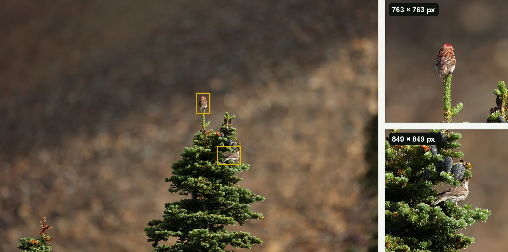

Guides · Updated 24 November 2026
Can you batch crop in Lightroom?
Lightroom is where many bird photographers do everything else, so it's the first place people look for a batch crop. It has one, but it's built for photos where the subject stays put.
Short answer: yes, Lightroom Classic can crop many photos at once by syncing or pasting one crop to all of them. But it copies the same box (position, size, shape and angle) to every photo, so when the bird moves between frames the crop misses it. To crop each bird separately in a batch, use a tool that finds the bird in every frame, such as BirdFrame, and keep editing in Lightroom.
How to batch crop in Lightroom Classic
- In the Develop module, crop one photo the way you want.
- Select that photo first, then the other photos you want cropped the same way.
- Click Sync, tick Crop (you can also sync just the aspect ratio or the angle), and click Synchronize. Or turn on Auto Sync to apply every change to the whole selection as you make it.
You can also use Copy and Paste Settings. Lightroom stores crop adjustments separately from the source, so you can reset them later. Adobe’s Develop module instructions
Why it misses birds
Synced crops are relative to the frame, not to the subject. That's perfect for a tripod sequence or a set of product shots. In a burst of a warbler moving through a bush, or a tern turning in the sky, the bird is somewhere different in every frame. A synced crop that fits frame 1 cuts the bird off in frame 4 and misses it entirely in frame 9, so you end up fixing each one by hand.
Crop around each bird on Mac or Windows
BirdFrame finds birds in a folder and crops thousands of photos in one go. If you want your Lightroom edits in the crops, export full-size JPEGs first. You can also run BirdFrame directly on the original folder when you want crops from the unedited files.
- Export full-size JPEGs in Lightroom Classic. Select your photos and choose File → Export. Under Export To, choose Hard Drive and pick a folder. Under File Settings, choose JPEG. In Image Sizing, leave Resize to Fit unchecked. Reset any existing Lightroom crop first if you want BirdFrame to see the entire frame. Adobe’s export instructions
- Open the folder in BirdFrame. Pick Tight, Balanced or Wide and crop the batch. Each crop comes from the full-size file you supplied, without downscaling or generating detail.
- On Windows, select Crops in Results to export the whole batch. On either platform, click Export Crops and choose a separate folder. You can import those JPEGs into Lightroom if you want them in your catalogue. Your source files and existing catalogue edits stay in place.

Try BirdFrame free for up to 50 photos per run on Mac or Windows. Each platform has a separate one-time unlock for larger batches. On Windows, you can start with a five-photo practice folder.
Questions
Can Lightroom batch crop photos?
Yes. In Lightroom Classic you can crop one photo, then sync or paste that crop to other selected photos. It copies the crop's position, size, shape and angle, so every photo gets the same box.
Can Lightroom crop each photo around the subject automatically?
Lightroom Classic’s Sync and Copy Settings apply the same crop to the selected photos. For a crop that follows a bird from frame to frame, use a subject-aware cropper on the folder.
How do I crop each bird in a batch of RAW files?
BirdFrame reads supported camera RAW files from a folder on Mac and Windows and exports separate JPEG crops. Windows uses Microsoft’s Raw Image Extension. For a RAW+JPEG pair, BirdFrame uses the camera’s JPEG, so set it to full size.
Crop every bird in one go, at full resolution. BirdFrame finds the birds in a whole album or folder and crops each one from the full-size original. Free for up to 50 photos per run.